Why script based modelling
I like script based, parametric modelling, because I can 'replay' complex design sequences with adapted parameters.
Examples are my kite-hydrofoil and SUP hydrofoil front and rear wings, which follow the same design approach, with the rear wing being a smaller version of the front wing and the SUP/Wave front wing (I call it monster) having a 3 x chordlength.
Kite-foil
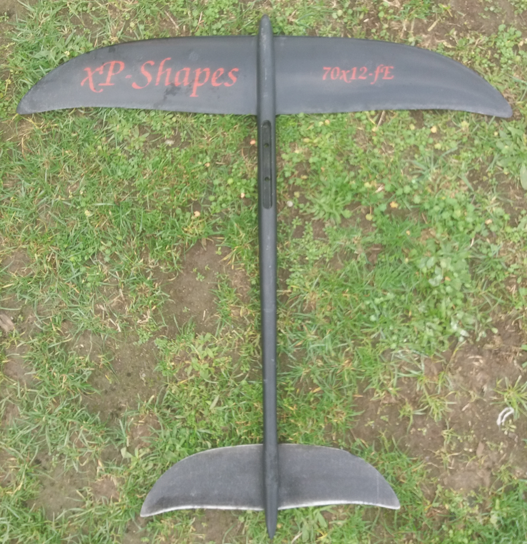
Sup/Wave foil monster wing
Wonder why it look that way? Pretty easy: I use it with kite and with my SUP (withe paddle) in waves. When I was waching SUP wave videos form others (in the early days) I saw that they need to palle like crazy to get flying, get flying late, wenh the wave is already steep, then race down the slope and get far in front of the wave. In addition, I wanted to be as agile (tight curves) as with my kite-foil
My design conditions therefore have been:
- keep the width at 70cm only (today typical SUP foils use 90cm or even larger!)
- get to fly at ~12km/h to catch the wave early before it gest to steep
- limit the max velocity via slef-limitation
all in all, using a low aspect ratio (large chord relative to given spanwidth) and generating massive induced drag did the job and I'm quite pleased with the result.
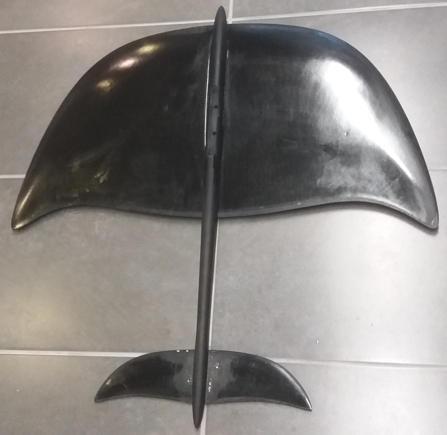
The basic scripts
I provide my scripts at github. The folder scripts contains wingLib.py, the library holding the basic worker routines and 2D airfoil data
| Folder | Name | Comment |
|---|---|---|
| scripts | wingLib.py | basic worker routines to e.g. get from 2D points to 3D surfaces |
| scripts | afData_xy.py | 2D airfoil data for profile xy |
| planes/basicWing | basicWing.blend | the blender file for the basic wing example |
| planes/basicWing | ellipticPlaneWing.py | the python script used in the basicWing.blend file to generate a planar wing with elliptic chord |
I currently include the h105 profile, which I (and many others) use for hydrofoils. This will be extended bit by bit according to my needs. Feel free to add your own profile data and send me a pull request. If you are looking for a specific dataset, check out UIUC Airfoil Database.
Getting started
- Take a set of points for a 2d profile (in this case the h105)
- Determine the position of the leading edge according to a parametrized curve (to achieve the seewp back of the wing tip region)
- Determine the chordlength along the span according to an elliptic curve
- Scale and place the 2D points and fit a curve through them (we then have a set of 2D profile curves placed in 3d as wing sections)
- Fit a surface through all the curves
This gives us the 3D wing
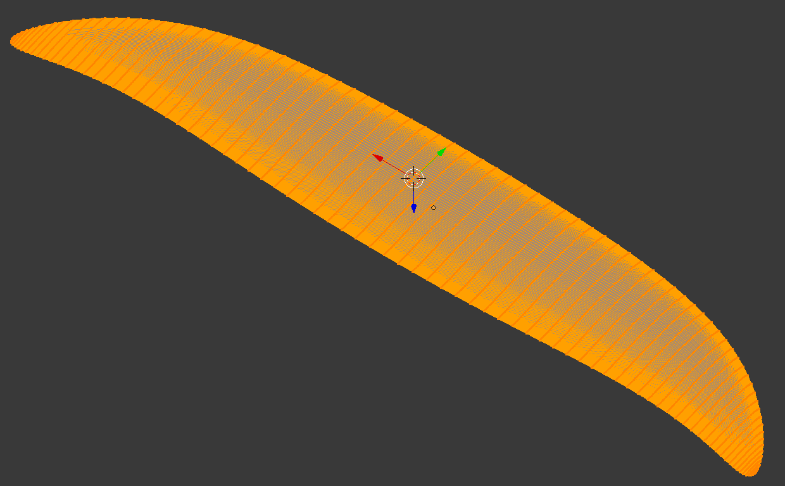
which could then be used for generating CAM paths using blenderCam.
Open blender's scripting workspace
Once you have blender up and running, clone the blenderCadCamTools.
Start blender and open the basicWing.blend file.
The reult should look like:
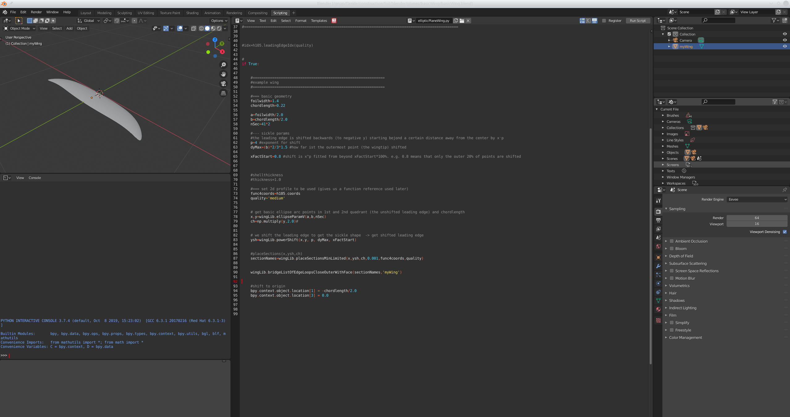
If not, check to be on the scripting workspace - you can select the different workspace in the top menu to the right of the standard menue (File, ...). You will most probaly end-up switching between Modeling and Scripting.
In the Scripting workspace, the script ellipticPlaneWing.py from the repo (stored right next to the blend file) should be open.
If not, click the symbol which looks like a folder (second from right), browse to where you cloned the repo to and open planes/basicWing/ellipticPlaneWing.py
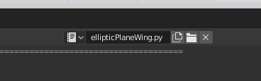
Scripting tools
On the left side, you have the
- usual modeling wintow (top)
- python console (middle) where you can enter python commands
- python commands blender uses when you model (using the mouse and user interface). This is quite helful, as you can copy paste the commands over to your scripts
Now click in the modeling window (top left) and hit n to pu-up the item transform dialogue which shows the location properties of the selected object (the wing).
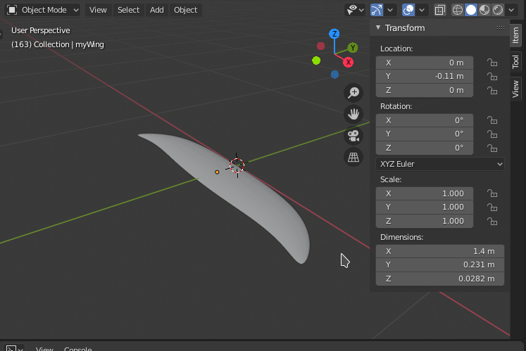
In the field for Location Y enter 0 and hit enter.
The script output window (left bottom shows the python api used to set the Y location).
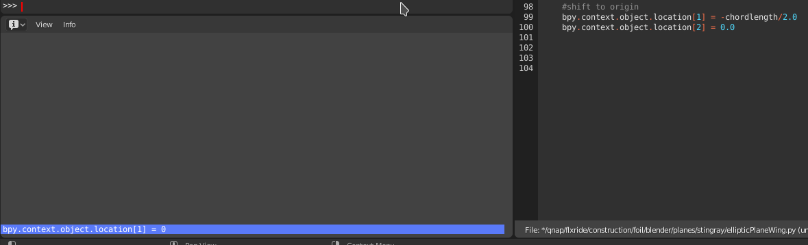
Select via left-click (blue), right-click>copy and paste in the python console (left middle).
Change '= 0' to e.g. = 0.042 and hit enter.
The wing now moved to that position:
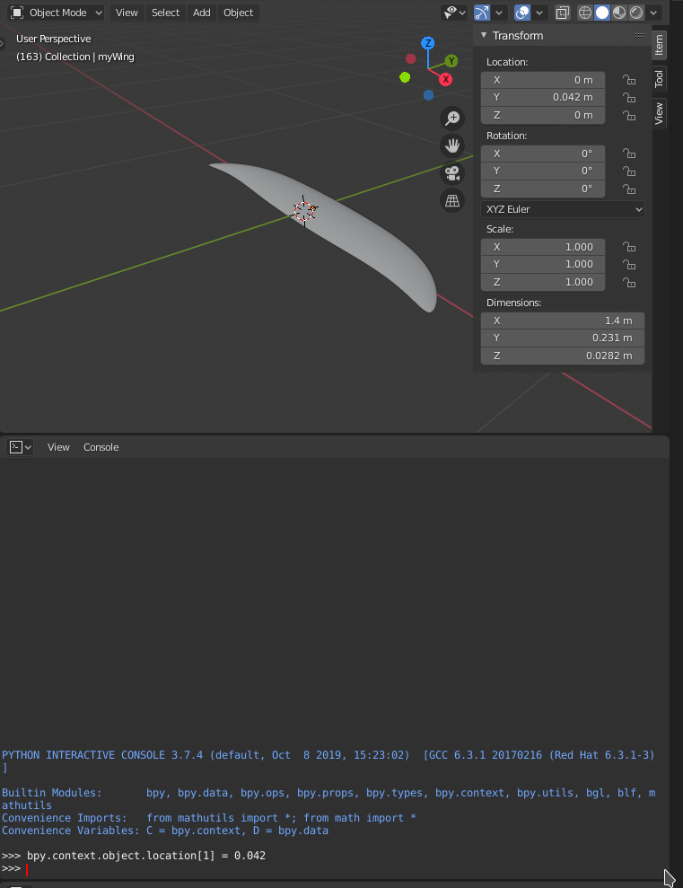
This is what we use at the end of the script (line 99) to place the wing at the origin (previous figure on the right).
Take home: what you can model can be scripted. Just open the scripting workspace and have a look at the api command output.
The ellipticPlaneWing.py script
The first few lines import necessary libraries, then extend the path to include the blenderCadCam scripts directory.
Line 10 uses a relative path (relative to the current blend file). If you cloned the repo, the scripts directory is 2 dirs up from basicWing.blend.
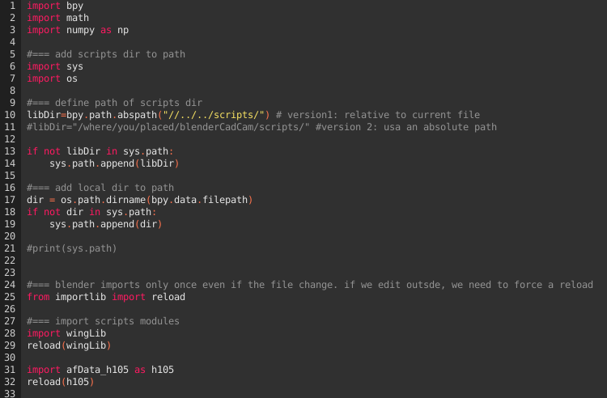
Line 28 & 29 then imports / reloads the winLib (the reload is necessary in case the file changed during the blender session).
Line 31/32 imports the h105 2d profile.
Configure the if clause line 43 to 1, 50 and 94 to 0 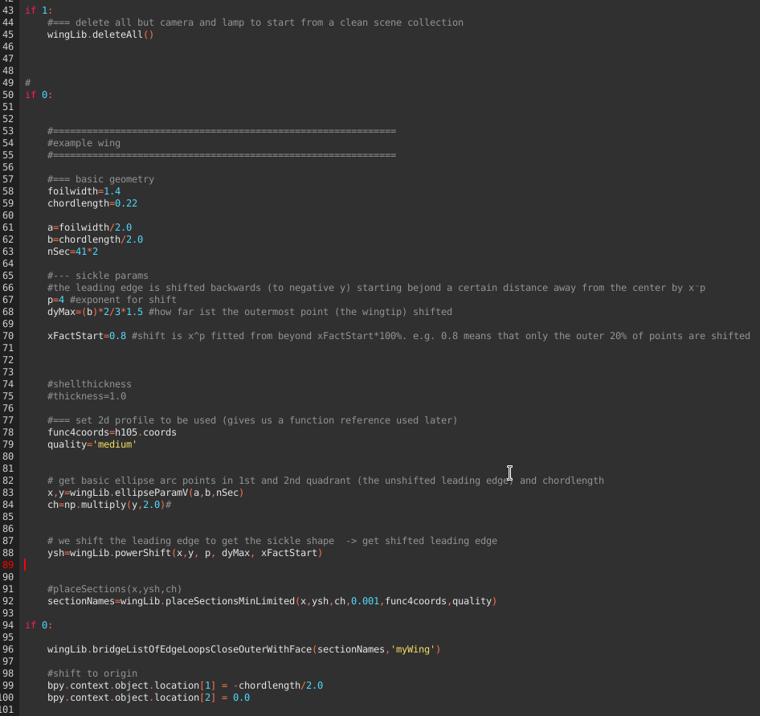 Hit run script (upper right of the script window). Noe the wing should have been disappeared. The deleteAll() helper routine in fact deletes all except the camera and lamp.
Configure the if clause line 43 AND 50 to 1, 94 to 0. Run the script.
You should now have a set of 2D profiles, named 2dsection_x.
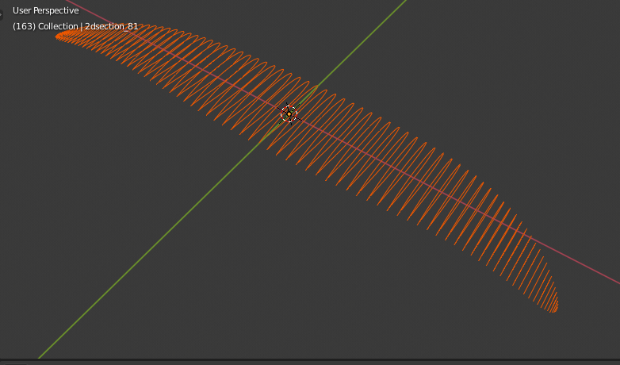
This is the result of executing steps 1.) to 4.) from some
Configure the if clause line 43, 50 AND 94 to 1. Run the script. This should give you the result of step 5: a surface fitted through the 2d curves.
Read through the scripts, it should be pretty obvious. An important hint: the sufaces need to be closed, otherwize you will get weird errors later on (mainly when using boolean intersections for designing moulds etc.). This is done in two places:
- Each of the 2D curves are closed (in placeSectionsMinLimited calling curveBezierFromPoints(hCoord,name,True) True=closed curve)
- In bridgeListOfEdgeLoopsCloseOuterWithFace (as the name states: outer edge loop is closed with face))
Getting there took me quite some time fiddling around. It's like always: once you have it, it looks straight forward.
You can now imagine how to generate bend-up wing tips etc. Either use the usual modeling tools of blender to do it once. Alternatively, define a function and adapt z location and y rotation of the individual sections before fitting the surface.
Moulds can now be designed by subtracting the wing from cubes etc. Play a bit with the modeling interface, have a look at the api command output and start designing your own scripts.